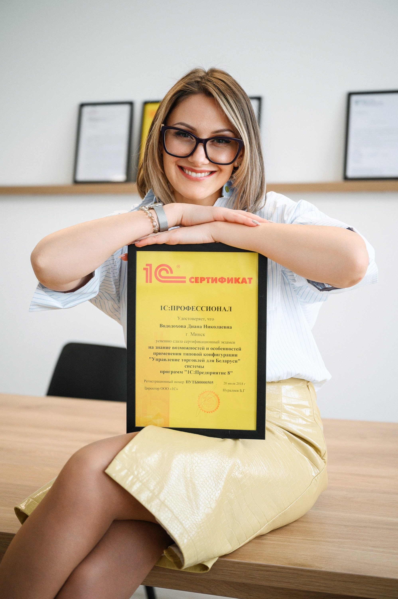

Программист 1С с опытом 14+ лет. Внедряю, дорабатываю и интегрирую — там, где типового функционала уже не хватает.

Меня зовут Диана Вододохова, и я — программист 1С с опытом 14+ лет. Родилась 20 апреля 1984 года, живу в Минске, гражданство РБ. Образование высшее: инженер-программист, Белорусско-Российский университет, специальность «Программное обеспечение информационных систем».
Работаю с платформой 1С:Предприятие с версии 7.7 и до актуальной 8.3 — застала и обычные формы (около 30% опыта), и управляемые (около 70%). За эти годы прошла путь от доработки чужих конфигураций до самостоятельного внедрения, интеграций и оценки проектов на автоматизацию.
Я методична и постоянно учусь: слежу за новыми механизмами платформы, регулярно прохожу профильные курсы. Не боюсь заходить в расширения и доработки там, где типового функционала не хватает, — но стараюсь делать это аккуратно, не снимая конфигурацию с поддержки поставщика.
Разобраться в чужой конфигурации, найти узкое место, аккуратно доработать так, чтобы ничего не сломать
2009–2017, УП «Мингаз» — доработка 1С 7.7, переход на 1С:УПП 8.3, учёт ГСМ, расчёты за газ, модуль административных процедур.
С 2018, «Вектор технологий» — самостоятельное внедрение Управления торговлей и Бухгалтерии предприятия для Беларуси и России.
2019, «Глобал Инжиниринг» — обмен остатками по FTP и API с торговой площадкой, выгрузка каталога на сайт на 1С-Битрикс, загрузка банковских выписок.
2020, СП «Белита» — внедрение и сопровождение 1С:Документооборот 8.3, проект внедрения УТ для интернет-магазина.
С 2023, ЧП «Активные Системы» — доработка и сопровождение конфигураций заказчиков, оценка проектов на автоматизацию.
«Формулируйте задачу по существу и в деталях — мелочь, которую вы считаете пустяком, часто и определяет, сколько времени займёт доработка». Диана Вододохова · 1С:Профессионал